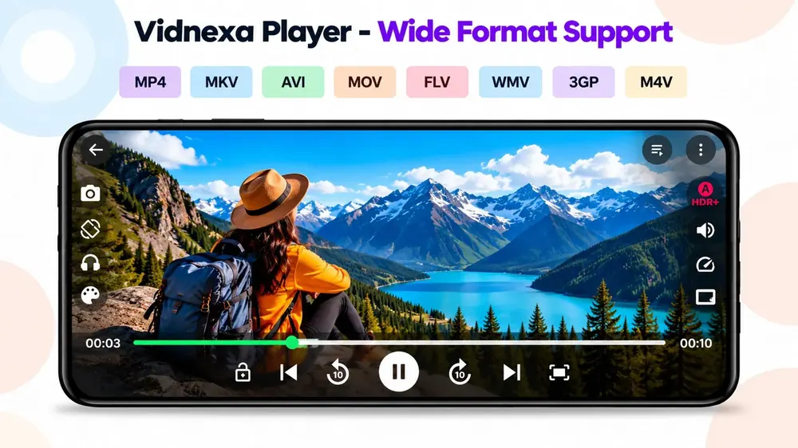
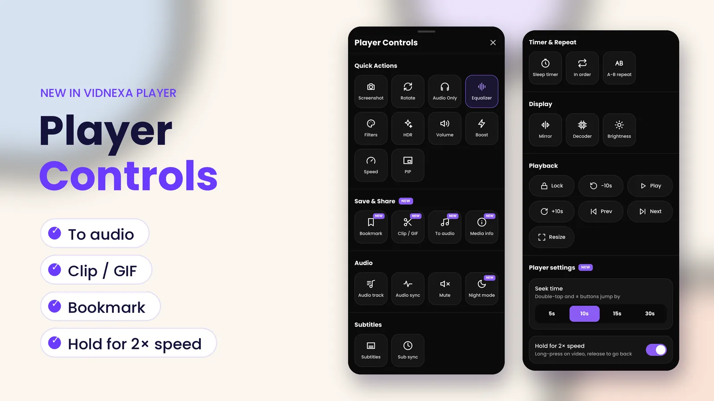
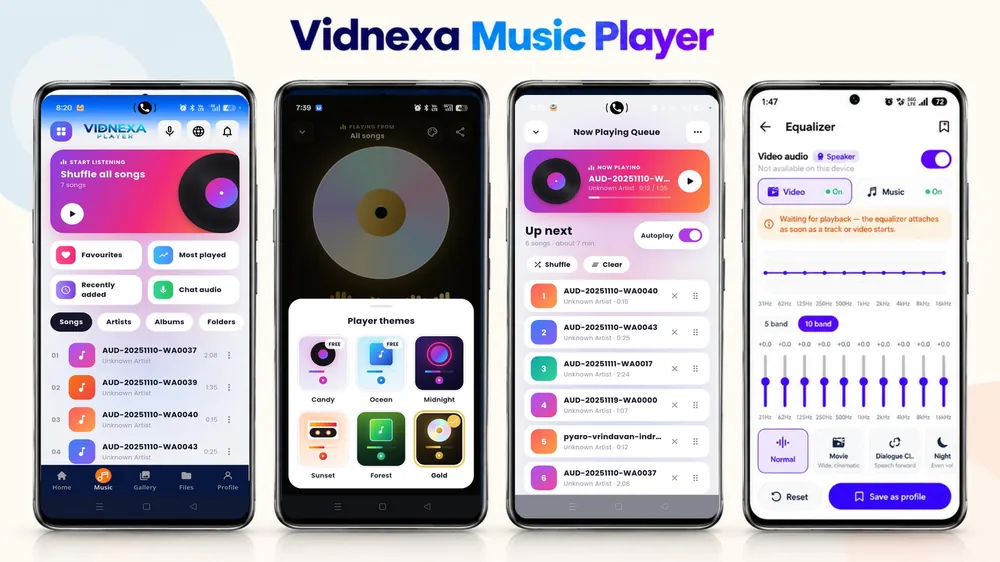
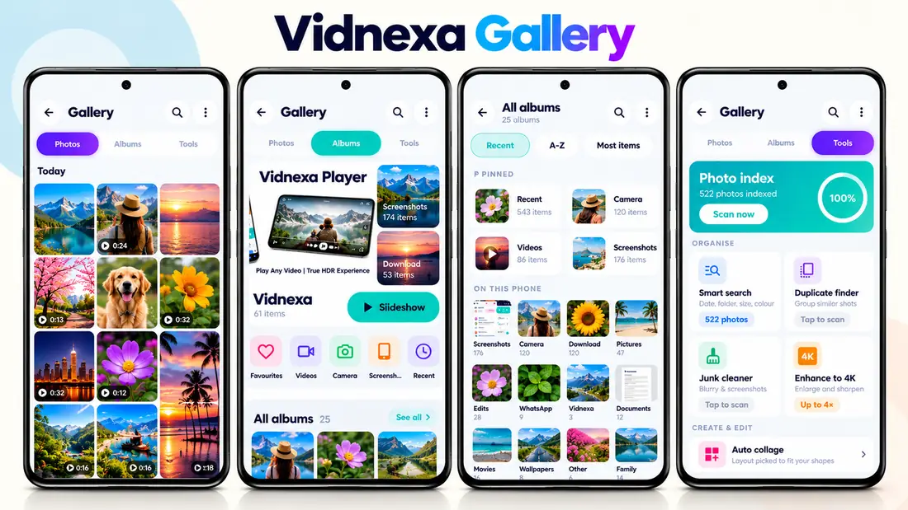
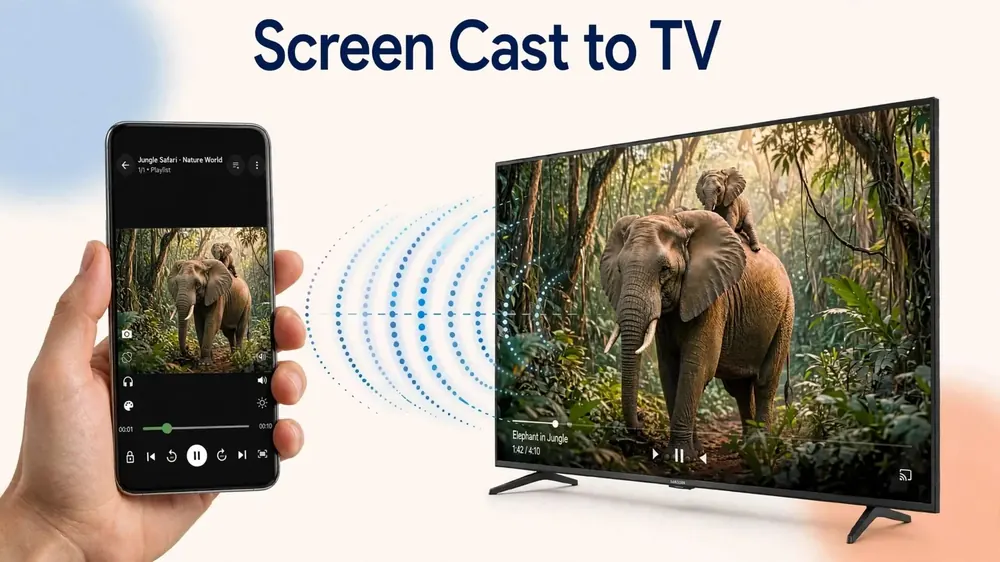

Beranda / Fitur
Semua yang bisa dilakukan Vidnexa Player.
Satu aplikasi Android gratis untuk video, musik, foto, dan file. Inilah setiap fitur, fungsinya, dan cara memakainya — dengan bahasa yang mudah.
01 · Pemutar video
Memutar file yang tidak bisa dibuka ponsel Anda.
Vidnexa memutar video 4K dan 8K dalam 200+ format — MP4, MKV, AVI, MOV, FLV, WEBM, HEVC, dan lainnya — dengan decoder bawaan, jadi Anda tidak perlu paket codec.

Pemutaran 4K & 8K
File resolusi tinggi dengan decoding hardware jika ponsel mendukung, dan decoder software sebagai cadangan.
Mode gambar HDR+
Preset seperti HDR+, Warm, Sepia, Neon City, Blue, Green, dan Dark meningkatkan kontras dan warna saat Anda menonton.
Subtitle
SRT, SSA, ASS, dan VTT, bawaan maupun file terpisah, dengan sinkronisasi subtitle jika waktunya meleset.
Trek & sinkron audio
Ganti bahasa audio pada file dual-audio dan perbaiki audio yang lebih cepat atau lambat dari gambar.
Gestur
Geser sisi kiri untuk kecerahan, sisi kanan untuk volume, dan ketuk dua kali untuk melompat.
Jendela mengambang & putar di latar
Tetap menonton di jendela kecil di atas aplikasi lain, atau biarkan audio terus berputar di latar belakang.
Cara memakainya
- Buka tab Home — Vidnexa menemukan video di ponsel Anda dan mengelompokkannya per folder.
- Ketuk video untuk memutarnya. Miringkan ponsel untuk layar penuh.
- Jika file menampilkan layar hitam atau tersendat, buka Player Controls dan coba opsi lain di Decoder.
Baca juga: Memutar file MKV & HEVC → · Video tidak bisa diputar? 7 solusi (Inggris) → · Panduan pemutaran 4K (Inggris) →
02 · Player Controls
Semua kontrol, cukup sekali ketuk.
Saat video diputar, buka lembar Player Controls. Semuanya dikelompokkan agar mudah dicari — dan alat terbaru ditandai NEW di aplikasi.

Alat baru dan praktis
To audio
Simpan suara seluruh video, atau hanya bagian A-B, sebagai file M4A (AAC) di Music / Vidnexa.
Clip / GIF
Potong momen favorit menjadi klip pendek atau GIF untuk disimpan atau dibagikan.
Bookmark
Tandai sebuah momen dan langsung kembali ke sana nanti.
Media info
Lihat detail file, seperti codec dan resolusinya.
Waktu lompat
Atur seberapa jauh ketuk dua kali dan tombol ± melompat: 5, 10, 15, atau 30 detik.
Tahan untuk 2×
Tekan lama video untuk menonton dengan kecepatan ganda; lepas untuk kembali normal.
Cara memakainya
- Putar sebuah video.
- Buka Player Controls dari pemutar.
- Ketuk sebuah alat. Untuk sebagian video, atur titik A dan B dengan A-B repeat dulu, lalu gunakan To audio.
03 · Pemutar musik
Pemutar musik lengkap, sudah ada di dalamnya.
Tab Music mengubah audio di ponsel Anda menjadi pustaka yang rapi, dengan tema pemutar dan equalizer sungguhan.

Pustaka Anda
Lagu, Artis, Album, dan Folder, plus pintasan Favorit, Paling sering diputar, Baru ditambahkan, dan audio dari chat.
Acak semua
Putar seluruh koleksi secara acak dengan sekali ketuk.
Tema pemutar
Ganti tampilan layar pemutar — Candy, Ocean, Midnight, Sunset, Forest, atau Gold.
Antrean
Lihat lagu berikutnya, urutkan ulang atau hapus lagu, acak, kosongkan, dan nyalakan atau matikan autoplay.
Equalizer
5 atau 10 band dengan preset seperti Normal, Movie, Dialogue, dan Night — dan simpan pengaturan Anda sebagai profil.
Timer, kecepatan & lirik
Sleep timer, kecepatan putar, lirik, dan volume langsung di pemutar.
Cara memakainya
- Buka tab Music.
- Ketuk Shuffle all songs, atau pilih lagu, artis, album, atau folder.
- Di pemutar, ketuk EQ untuk mengatur suara, atau ikon palet untuk mengganti tema.
Baca juga: Panduan pengaturan equalizer (Inggris) →
04 · Galeri & alat foto
Foto Anda, tertata dan bersih.
Tab Gallery punya tiga bagian: Photos, Albums, dan Tools.

Foto per hari
Foto dan video Anda dikelompokkan per tanggal, dengan durasi tampil di setiap video.
Slideshow album
Putar album apa pun sebagai slideshow dengan sekali ketuk.
Album sesuai keinginan
Album yang disematkan di atas; urutkan sisanya menurut Terbaru, A–Z, atau Item terbanyak.
Pencarian pintar
Cari foto menurut tanggal, folder, ukuran, atau warna setelah pengindeksan foto singkat.
Pencari duplikat & pembersih sampah
Kelompokkan foto yang mirip, temukan foto buram dan tangkapan layar lama, lalu kosongkan ruang.
Tingkatkan & kolase
Tingkatkan foto hingga 4× dan buat kolase otomatis yang pas dengan bentuknya.
Cara memakainya
- Buka tab Gallery.
- Di Tools, ketuk Scan now sekali agar indeks foto bisa menjalankan pencarian pintar dan pembersihan.
- Buka album lalu ketuk Slideshow, atau pilih alat seperti Junk cleaner.
05 · Status Saver
Simpan status sebelum hilang.
Status hilang setelah 24 jam. Status Saver bawaan menampilkan status yang sudah Anda lihat dan memungkinkan Anda menyimpan yang Anda suka.
Status yang sudah dilihat
Foto dan video yang sudah Anda buka di aplikasi pesan muncul di Status Saver.
Pratinjau layar penuh
Lihat dalam layar penuh sebelum memutuskan.
Simpan sekali ketuk
Unduh ke galeri dalam kualitas asli, tanpa watermark.
Bagikan
Kirim file yang disimpan ke mana saja.
Cara memakainya
- Buka status di aplikasi pesan terlebih dahulu, agar ponsel menyimpannya.
- Buka Status Saver di Vidnexa.
- Ketuk unduh pada foto atau video yang ingin disimpan.
Hormati privasi orang lain: simpan dan bagikan hanya konten yang tidak keberatan bagi pemiliknya.
Baca juga: Panduan langkah demi langkah Status Saver →
06 · Screen Cast
Tonton di layar besar.
Vidnexa menggunakan Google Cast. Kirim video, foto, dan musik ke Chromecast, perangkat Google TV, atau TV apa pun dengan Chromecast bawaan dalam Wi-Fi yang sama.

Ponsel jadi remote
Jeda, maju-mundur, atau kunci layar sementara TV memutar.
File asli
Cast mengirim file itu sendiri, jadi kualitasnya bergantung pada TV dan Wi-Fi Anda, bukan layar ponsel.
Tidak punya Chromecast?
Sebagian besar TV Samsung dan LG tidak mendukung Google Cast. Gunakan screen mirroring di ponsel — panduan kami menjelaskan caranya.
Cara memakainya
- Sambungkan ponsel dan TV ke Wi-Fi yang sama.
- Putar sesuatu di Vidnexa dan ketuk ikon cast.
- Pilih TV Anda dari daftar.
07 · File & privasi
File dan brankas pribadi.
Tab Files adalah pengelola file untuk semua isi ponsel Anda, dan brankas pribadi menyimpan media pribadi di balik kunci.
Pengelola file
Jelajahi folder dan penyimpanan, lalu ganti nama, pindahkan, atau hapus file tanpa keluar dari aplikasi.
Brankas pribadi
Sembunyikan foto dan video dengan PIN atau sidik jari. PIN tidak pernah keluar dari perangkat Anda.
Tanpa akun
Gunakan semua fitur tanpa mendaftar.
Cara memakainya
- Buka tab Files untuk menjelajahi penyimpanan.
- Pindahkan file pribadi ke brankas dan atur kunci PIN atau sidik jari.
Baca juga: Cara Vidnexa menangani data Anda (Inggris) →
08 · Kontrol suara AI
Cukup ucapkan.
Kendalikan pemutaran tanpa tangan: putar, jeda, lewati, atur volume, atau cari di pustaka dengan suara Anda.
Pemutaran tanpa tangan
Berguna saat memasak, berolahraga, atau ponsel jauh dari jangkauan.
Opsional
Mikrofon hanya dipakai saat kontrol suara sedang mendengarkan. Anda bisa mematikan izinnya kapan saja.
Cara memakainya
- Ketuk tombol mikrofon.
- Ucapkan perintah seperti "pause" atau "next".
09 · Network Player
Putar dari tautan.
Putar media langsung dari tautan langsung yang Anda tambahkan sendiri — misalnya file di server Anda sendiri, atau sumber yang Anda berhak gunakan. Tidak ada tautan, playlist, atau saluran bawaan di aplikasi.
Streaming tanpa unduh
File diputar sambil dimuat.
Hanya tautan Anda
Vidnexa tidak menyediakan konten; aplikasi memutar tautan yang Anda tambahkan.
Cara memakainya
- Buka Network Player.
- Tempel tautan media langsung dan ketuk putar.
Perlu diketahui
Apa itu HDR+ — dan apa yang bukan.
Format video HDR
HDR10, HDR10+, HLG, dan Dolby Vision tersimpan di dalam file video. Untuk melihat efek aslinya, Anda perlu layar yang mendukung HDR.
HDR+ Vidnexa
Mode peningkatan gambar yang Anda nyalakan saat menonton. Preset seperti HDR+, Warm, dan Neon City menaikkan kontras, kecerahan, dan warna — berguna untuk video yang kusam atau gelap. Mode ini tidak mengubah file menjadi HDR asli.
Baca juga: Arti HDR yang sebenarnya di ponsel (bahasa Inggris) →
Pertanyaan
Pertanyaan yang sering diajukan
Apakah Vidnexa Player gratis?
Ya. Gratis diunduh dari Google Play. Versi gratis berisi iklan, dan ada pembelian opsional dalam aplikasi. Tidak perlu daftar atau akun.
Bisakah Vidnexa menyimpan audio dari video?
Bisa. Saat video diputar, buka Player Controls lalu ketuk To audio. Anda bisa menyimpan suara seluruh video, atau hanya bagian A-B, sebagai file M4A (AAC).
Apakah HDR+ sama dengan HDR10?
Tidak. HDR10, HLG, dan Dolby Vision adalah format di dalam file video. HDR+ Vidnexa adalah mode peningkatan gambar dengan preset yang menaikkan kontras, kecerahan, dan warna saat menonton, dan juga bekerja pada video biasa.
TV apa saja yang bisa menerima cast dari Vidnexa?
Perangkat Chromecast, perangkat Google TV, dan TV dengan Chromecast bawaan, seperti sebagian besar model Android TV dan Google TV. Untuk TV tanpa Google Cast, termasuk sebagian besar model Samsung dan LG, gunakan screen mirroring di ponsel.
Format subtitle apa yang didukung?
SRT, SSA, ASS, dan VTT, bawaan di video maupun file terpisah, dengan sinkronisasi subtitle.
Coba dengan file Anda sendiri.
Gratis diunduh · berisi iklan · pembelian dalam aplikasi · tanpa daftar
▶ Unduh di Google Play